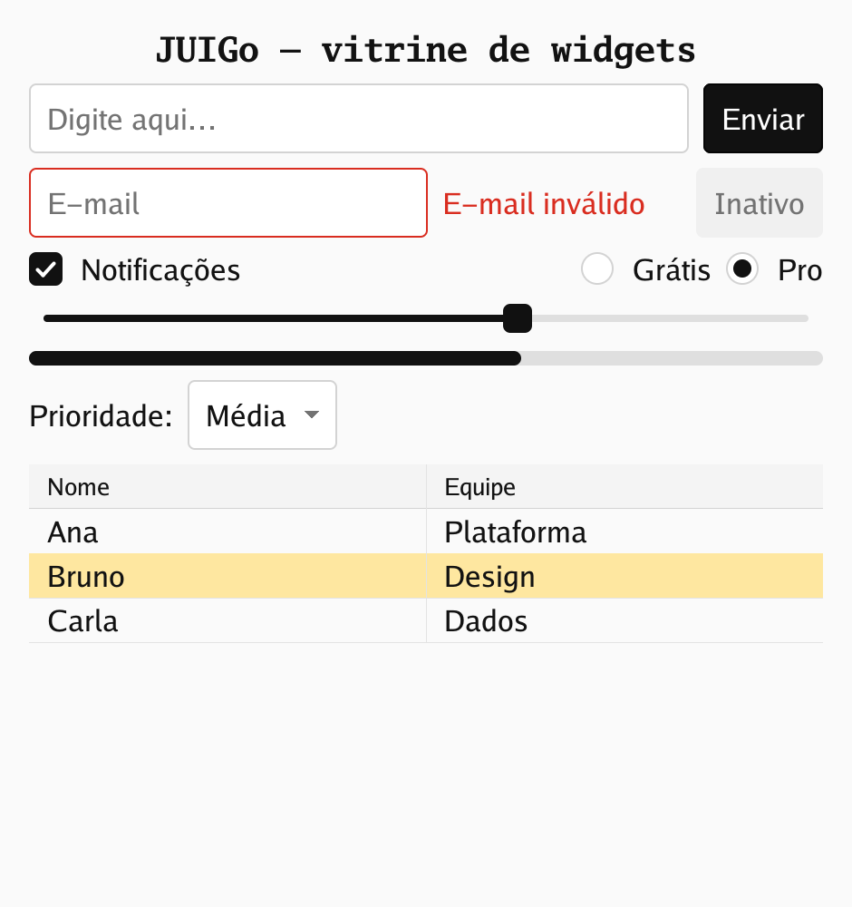
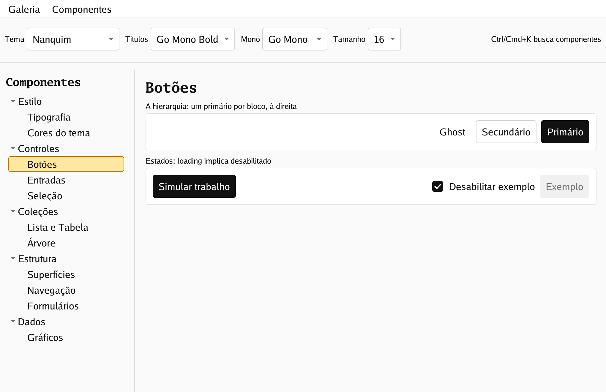
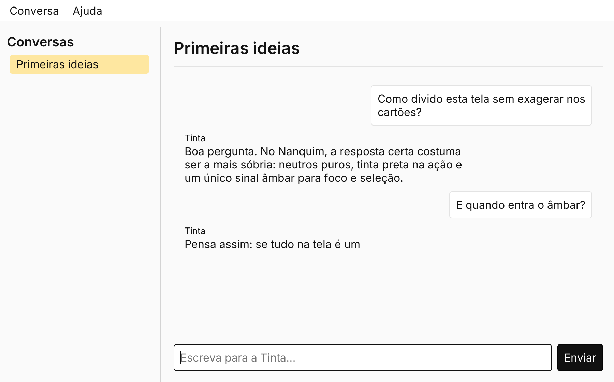
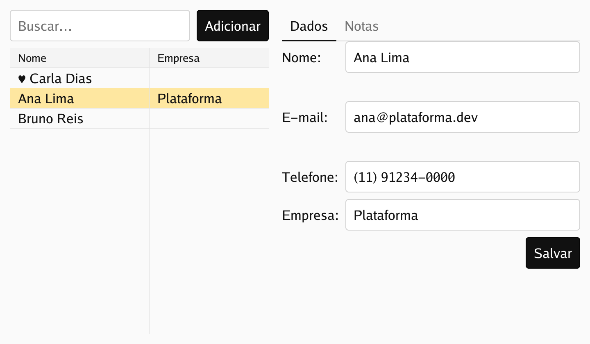
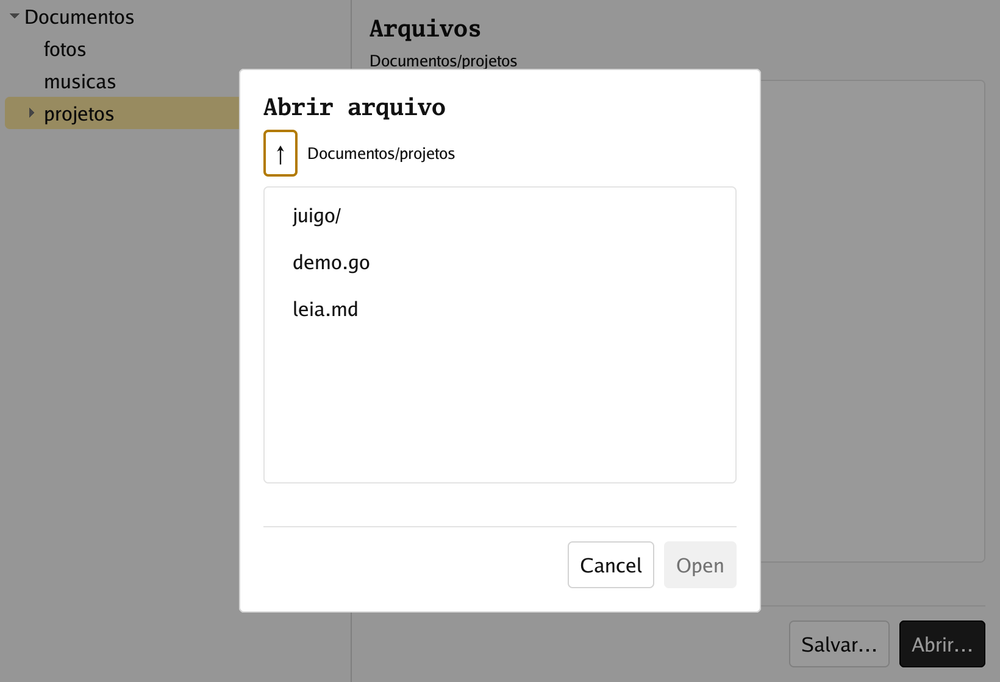
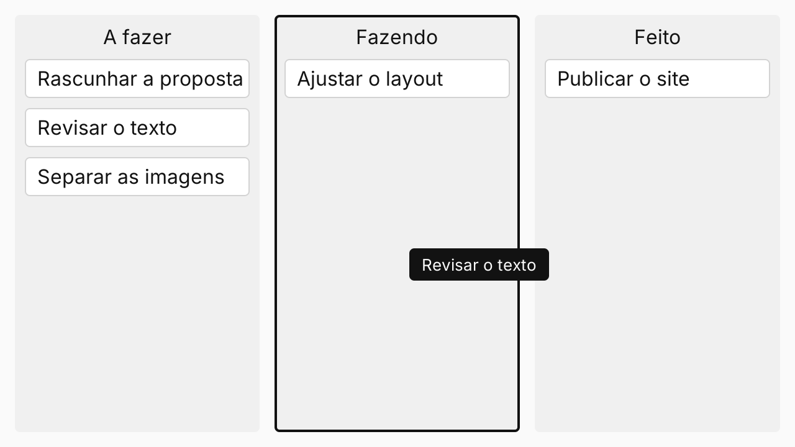
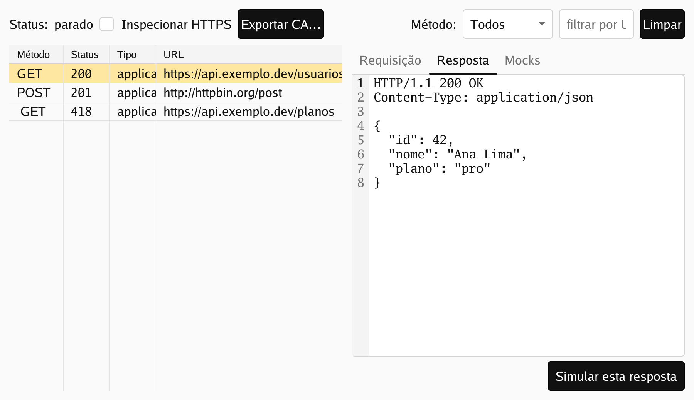
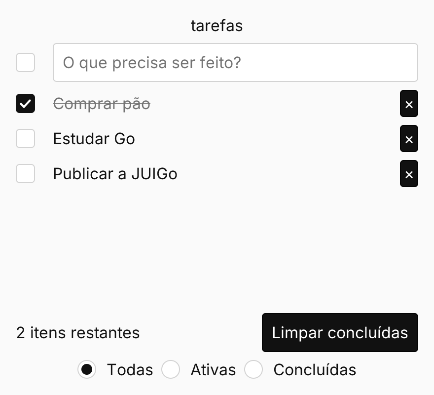
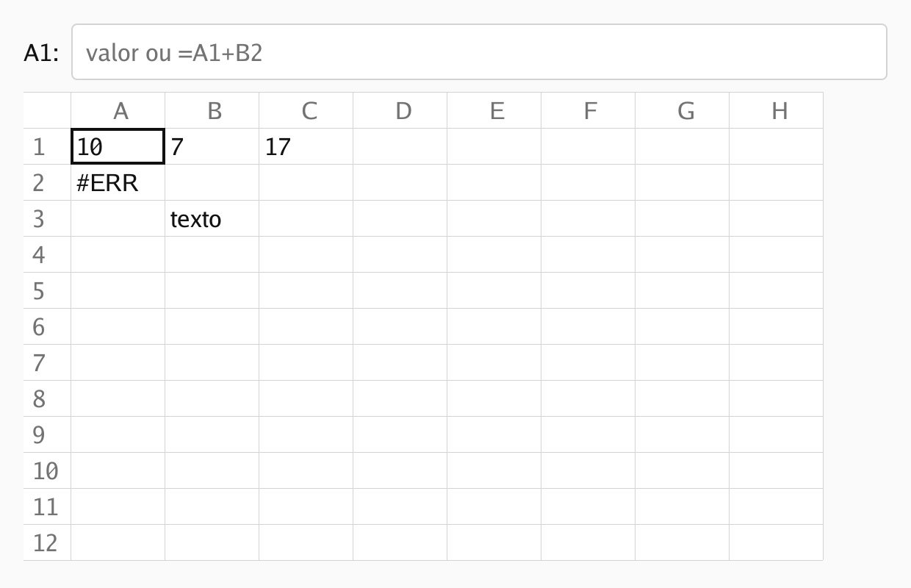

Interfaces desktop em Go, desenhadas pixel a pixel.
JUIGo é uma biblioteca de GUI escrita do zero: renderização por software num
*image.RGBA, estado reativo tipado com generics, formulários validados numa
expressão e testes de UI determinísticos. Tudo atrás de um único import.
go get github.com/JonathanSantos/JUIGo
- 25+ widgets
- 17 µs por frame incremental
- 0 alocações no desenho
- 3 dependências

Instalação
-
Tenha Go 1.26+ e um compilador C
O GLFW compila via cgo. No macOS bastam as Command Line Tools (
xcode-select --install). No Linux, os headers de janela e GL:sudo apt-get install libgl1-mesa-dev libx11-dev libxrandr-dev libxi-dev libxcursor-dev libxinerama-devNo Windows, um gcc do MSYS2 ou do TDM-GCC. Desenvolvido e verificado no macOS; Linux e Windows têm as dependências mapeadas, mas ainda não foram testados.
-
Adicione o módulo
go get github.com/JonathanSantos/JUIGoAs fontes vêm embutidas via
go:embed: o binário não depende de nada instalado no sistema.
Primeiro app
Um campo e um título que reage a cada tecla. O State é a única fonte de
verdade; a interface é uma projeção dele.
package main
import (
"log"
juigo "github.com/JonathanSantos/JUIGo"
)
func main() {
nome := juigo.NewState("mundo")
ui := juigo.NewVBox(
juigo.NewText("").BindText(juigo.Map(nome, func(s string) string {
return "Olá, " + s + "!"
})).Center(),
juigo.NewInput("Seu nome…").BindValue(nome),
).Pad(16)
if err := juigo.Run("Olá, JUIGo", 360, 140, ui); err != nil {
log.Fatal(err)
}
}go run .
Estado reativo
State[T] guarda um valor; Map e Combine derivam
outros. Todo Bind* liga um widget a um State nos dois sentidos, e
Set redesenha só o que mudou. Eventos continuam callbacks: estado é para dados.
cliques := juigo.NewState(0)
rotulo := juigo.Map(cliques, func(n int) string {
return fmt.Sprintf("%d cliques", n)
})
ui := juigo.NewHBox(
juigo.NewText("").BindText(rotulo).Centered(),
juigo.NewButton("+1", func() { cliques.Set(cliques.Get() + 1) }),
).Gap(8)Os vínculos assinam o State com referência fraca: reconstruir uma lista com
Clear + Add não acumula observadores.
Layout e tema
Tudo é declarável numa expressão: opções e callbacks são métodos encadeáveis que devolvem
o tipo concreto. VBox/HBox com Grow(peso),
Spacer e Gap; Grid para formulários alinhados;
Scroll, List e Table virtualizadas para milhares de
linhas.
Construtores não pedem tema: o App o injeta na árvore. O padrão é a identidade Nanquim, a
desta página (DefaultTheme e DarkTheme), trocável em tempo de
execução. Um tema próprio nasce de sementes: NewTheme(Palette{Primary: …}) deriva
todos os tokens, claro e escuro, com contraste WCAG garantido. Métricas são unidades lógicas,
então HiDPI é transparente.
app, err := juigo.New("Notas", 800, 600)
if err != nil {
log.Fatal(err)
}
marca := juigo.Palette{Primary: color.RGBA{R: 0x2B, G: 0x59, B: 0xD9, A: 0xFF}, Dark: true}
escuro, _ := juigo.NewTheme(marca)
app.SetTheme(escuro)
app.SetRoot(ui)
app.Run()Formulários
A camada quick monta um formulário validado numa expressão. Cada campo é um
handle tipado dono do próprio State: a variável é a chave do formulário, verificada pelo
compilador.
nome := quick.Text("Nome:").Required("Informe o nome").Min(3, "Mínimo de 3")
email := quick.Text("E-mail:").Email("E-mail inválido")
idade := quick.Number("Idade:", 18).Max(120, "Confere a idade?")
quick.Form(nome, email, idade).Submit("Salvar", func() {
salvar(nome.Value(), email.Value(), idade.Value()) // string, string, int
})Também em uma chamada: quick.Confirm, Alert, Prompt,
Menu, Toast e o seletor de arquivos OpenFile/SaveFile.
Tudo aceita e devolve widgets comuns; quando o pronto não serve, desça um nível só naquele ponto.
Trabalho assíncrono
A interface vive numa só thread. App.Post é a única porta de entrada para
goroutines: o trabalho pesado roda fora, o resultado volta para a main thread.
pedidos := juigo.NewState([]string{})
go func() {
lista := buscarPedidos() // fora da main thread
app.Post(func() { pedidos.Set(lista) })
}()Testes de UI
uitest dirige o mesmo núcleo de interação do App real, sem janela e sem
sleeps: relógio virtual, seletores por texto e screenshots determinísticos para golden tests.
func TestFormulario(t *testing.T) {
h := uitest.New(t, ui, 480, 240)
h.Click(uitest.Placeholder("Digite…")) // foca de verdade
h.Type("olá, ação") // runes, com acentos
h.Hover(uitest.Text("Enviar"))
h.Advance(600 * time.Millisecond) // relógio virtual: o tooltip aparece
img := h.Screenshot() // determinístico
}Em qualquer app, Ctrl/Cmd+I abre o inspector de depuração.
Componentes
O código de cada exemplo é o corpo exato da função que renderizou a imagem (docs/gerar/componentes.go). Para ver todos vivos, rode a galeria:
go run ./examples/galeria
Exemplos
Onze apps no repositório, cada um com testes. Clone e rode qualquer um.

examples/galeria O storybook do JUIGo, feito com o próprio JUIGo:
troque tema, fontes e tamanho de texto em pleno voo.
examples/chat Conversas num SplitPane, balões com Label, barra de
menus e paleta de comandos.
examples/contatos Mestre-detalhe com busca, abas, menu de
contexto e toasts.
examples/arquivos Árvore de pastas lida sob demanda e o seletor de
arquivos.
examples/kanban Drag-and-drop entre colunas, com fantasma e
realce do alvo.
examples/proxy Proxy de depuração HTTP/HTTPS local, com mocks de
respostas.
examples/todo TodoMVC em três camadas, com persistência.
examples/7guis O benchmark 7GUIs completo, incluindo a
mini-planilha.E ainda basic, navegacao, janelas (múltiplas
janelas com o mesmo State) e editor (o CodeEditor).
Por dentro
Como a lib funciona por baixo. Contratos completos em ARQUITETURA.md.
Um import, camadas acíclicas
juigo é uma fachada: tem o App e reexporta tudo por alias. Abaixo dela, cada camada conhece só as de baixo; internal/hooks é a única ponte de volta ao App (repintura e clipboard), fora da API pública.O laço de um frame
WaitEvents e só acorda por evento ou timer. Tudo roda numa thread, sem mutex; App.Post é a única porta para goroutines.Dirty regions
Roteamento de eventos
MouseDown captura o mouse até o MouseUp. O teclado vai direto ao focado.Reatividade sem vazamento
Bind* assina o State com referência fraca: widget coletado, watcher some. O Set chama os watchers em ordem e cada setter invalida só o próprio widget.Overlays em pilha
List virtualizada
bind(row, i). 44 µs por passo com 10.000 linhas.Cache de glyphs
font.Drawer, com zero alocações.Temas por sementes

NewTheme(Palette{…}) deriva os tokens em OKLCh e ajusta cada par à régua WCAG. Um teste varre o cubo RGB como semente: qualquer cor dá um tema aprovado.uitest: a mesma Session, sem janela
Session; o uitest dirige a mesma Session com eventos sintéticos e relógio virtual. Mesma entrada, mesmos bytes: screenshots viram golden tests.Desempenho
Medido numa retina 13" (2560×1600). Metodologia e limites em BENCHMARK.md.
| Frame completo, tela inteira | 0,76 ms de CPU |
|---|---|
| Frame incremental (dirty regions) | 17 µs |
| Rolagem numa List de 10.000 linhas | 44 µs |
| Alocações no caminho quente de desenho | zero |
Binário completo, -s -w | 4,3 MiB |